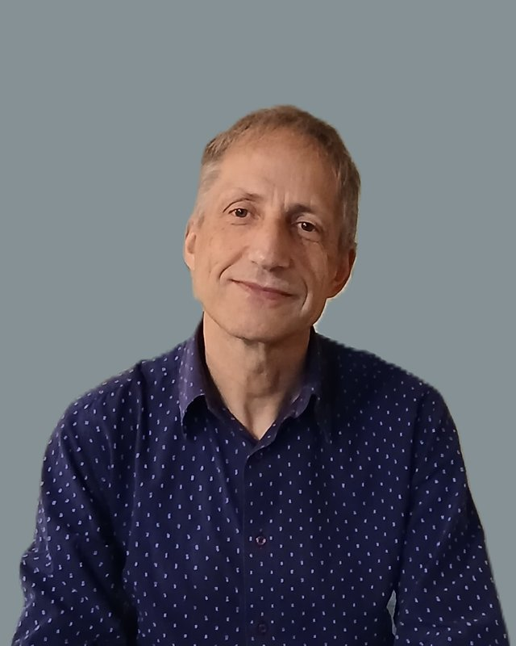

Principal investigator · Professore associato
Francesco Marin 
Dipartimento di Fisica e Astronomia, Università di Firenze
Associato aLENS · CNR-INO · INFN
Spettroscopia atomica e molecolare, fisica dei laser, fenomeni non lineari e stocastici, ottica quantistica, ricerca sperimentale di onde gravitazionali.